又一城市公园来了！这回在南二环
来源：北京东城
今天（9月9日），位于南二环外侧，总面积1.9万平方米的燕墩公园正式开园。这处居民家门口的大尺度公园，以“城市森林+”为建设理念，挖掘“燕墩”文物特点，为居民打造了一处休闲功能与文化特色兼顾的绿色生态空间。
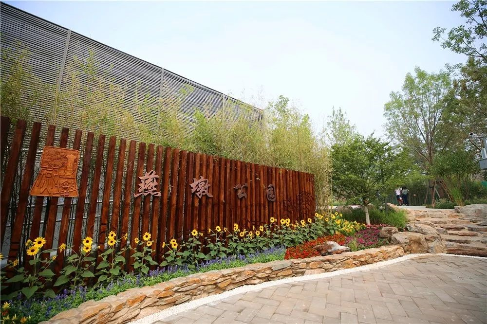乡土树种超过七成
走进燕墩公园，高大的乔木和品种多样的灌木为公园披上了“绿装”。
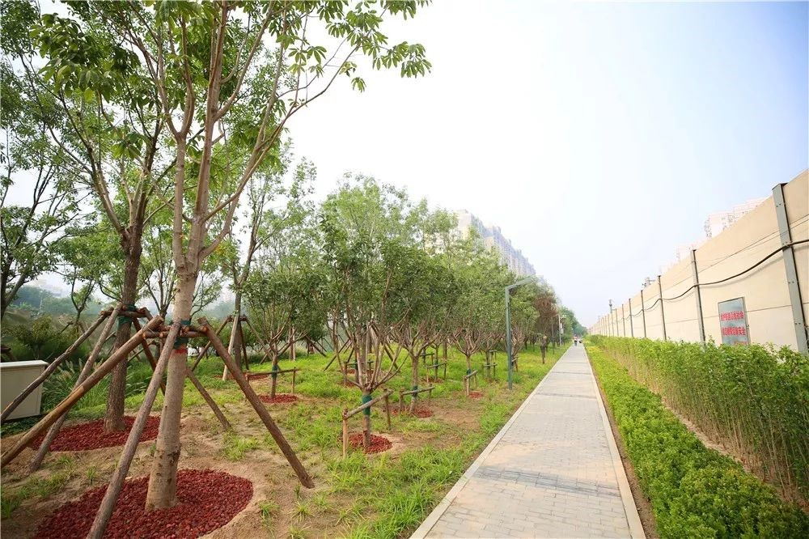据区园林绿化局副局长褚玉红介绍，该公园在植物配置上，乡土树种占70%左右，地被植物覆盖面积达78%。此外，还种植了银红槭、鸡爪槭等新优品种植物和山桃、石榴、丁香等浆果类、蜜源类植物品种，为公园增加丰富配色的同时也增添了趣味性。
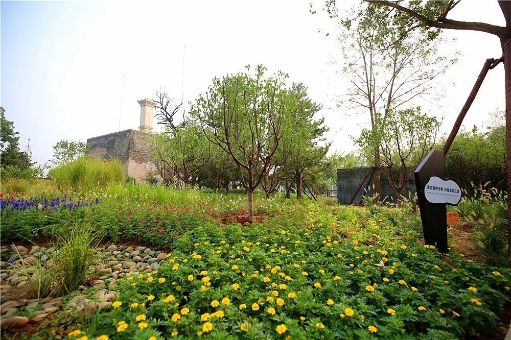全园共栽植乔木30余品种，约1000余株；灌木10余种，约200余株，地被植物43种，面积约1.5万平方米。
公园建设注重休闲功能
记者发现，与其它城市公园不同，燕墩公园内有一条全长约1.2公里的林下蜿蜒漫步道和全长约800米的直线漫步道，步道的两侧分布着儿童活动场地、健身场地等多处活动空间。
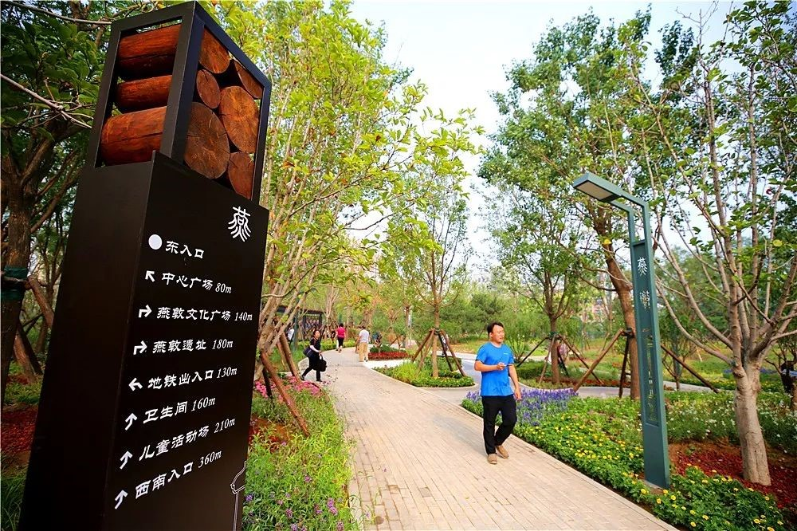褚玉红介绍，该公园以城市森林为建设原则，考虑周边百姓需求，注重休闲功能建设。园内充分利用公园狭长地块的优势，将公园甬路与西侧绿地贯通，形成了林下蜿蜒漫步道。同时，还利用铁路防护路，设置了与西侧绿地连接的直线漫步道。多种活动空间的建设，基本满足了附近居民日常户外活动的需求，弥补了京津城际铁路南侧优质户外活动空间不足的缺欠。
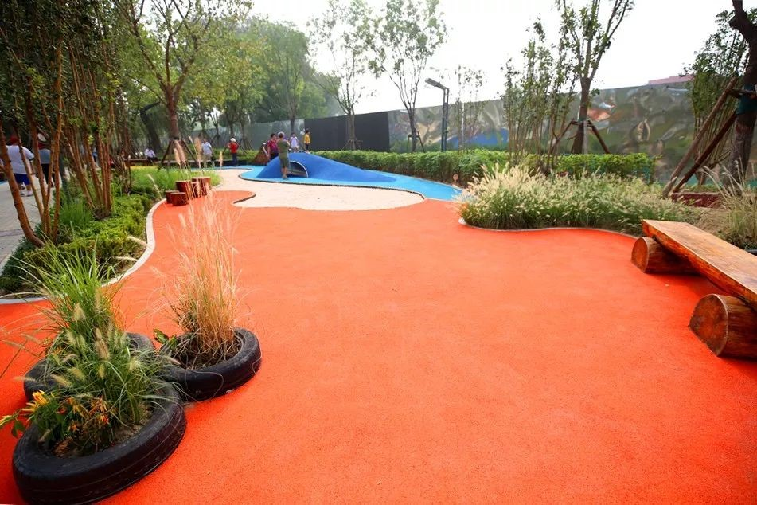此外，园内还选用透水铺装材料铺装近2000平方米，在园路两侧设置植被浅沟，共约670平方米，可以帮助雨水快速下渗，最大限度实现园内雨水回灌地下水源。
发挥地理优势打造文化公园
记者还注意到，步道两旁的路边还立着几块指示牌，标明了园内活动空间的方向和距离，还印着“燕”字小篆和“燕墩”的剪影。在休憩广场上，还有一块雕刻着“燕墩”文物建筑特点和历史沿革的牌示雕塑，吸引了不少居民阅读。
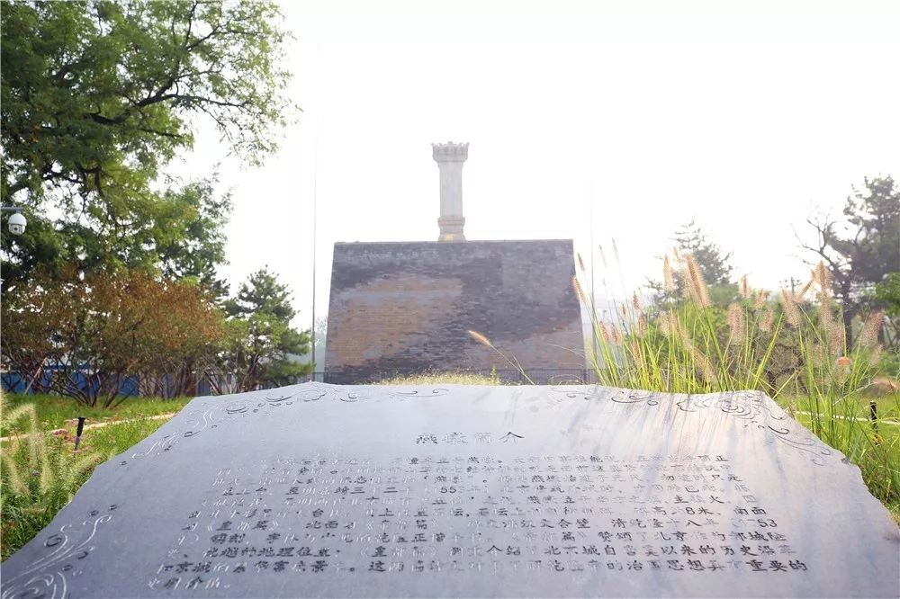 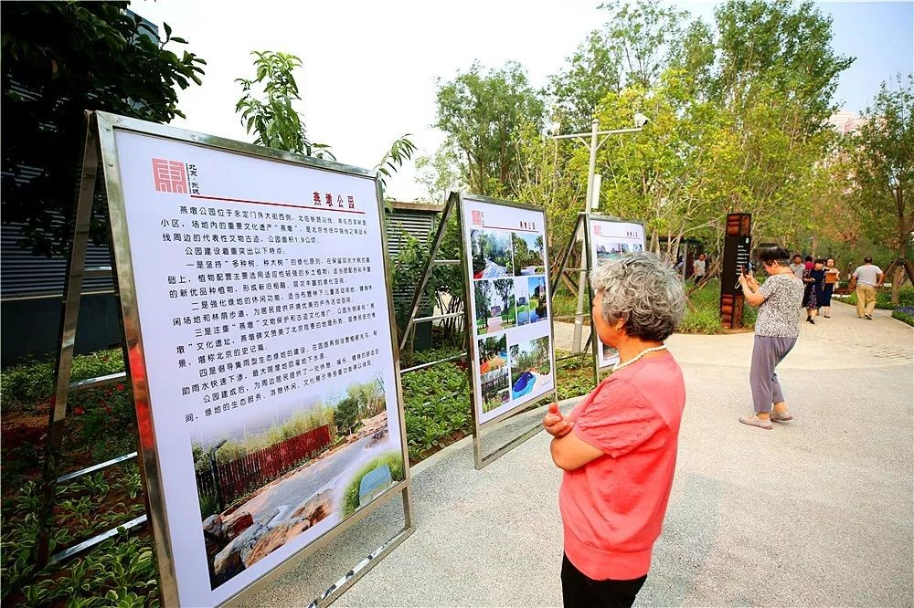公园东侧紧邻“燕墩”文化遗址，是北京传统中轴线之南延长线的标志性文物。据传，燕墩始建于元代，其上刊刻御制碑，碑文赞美了北京险要的地理形势、国泰民安的情景，堪称北京的史记篇。随着城市的发展，这座文物鲜被提及。
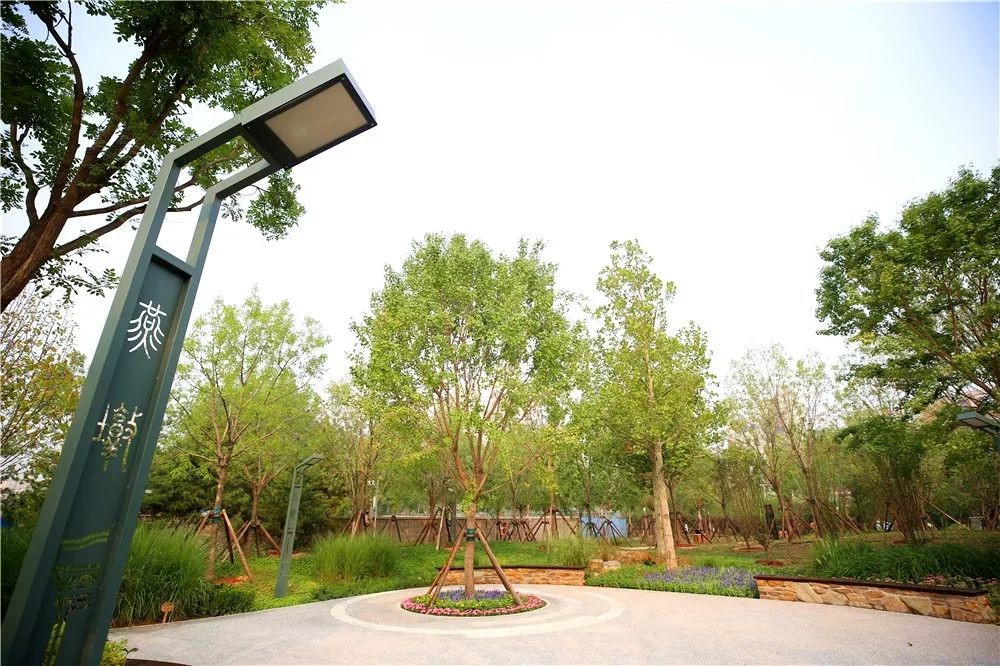 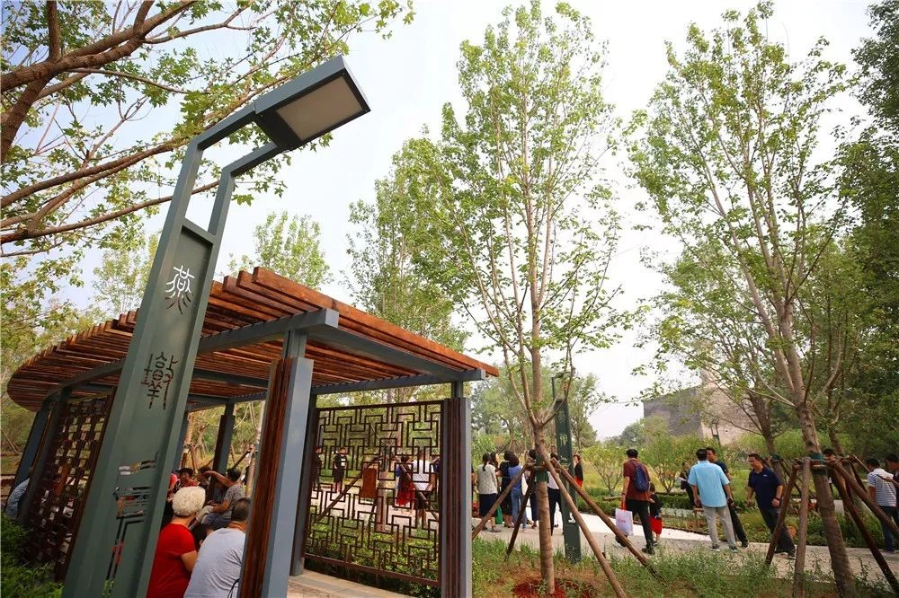褚玉红介绍，该公园建设时挖掘“燕墩”文物特点，通过一系列文化景观建设，使人们在公园漫步休闲的同时，了解北京“燕墩”文物遗址的历史文化。.
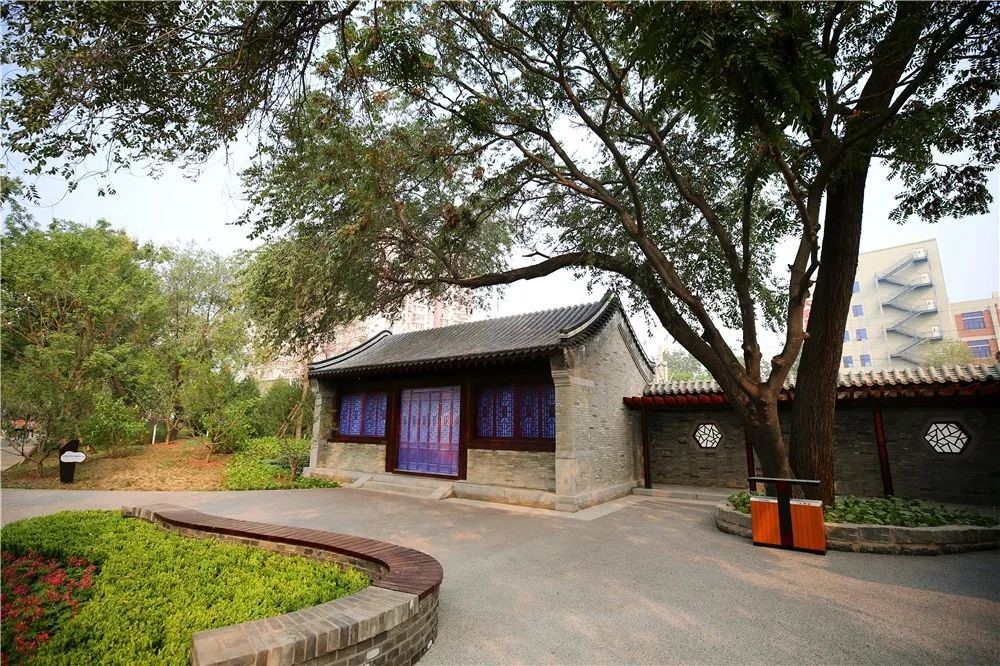 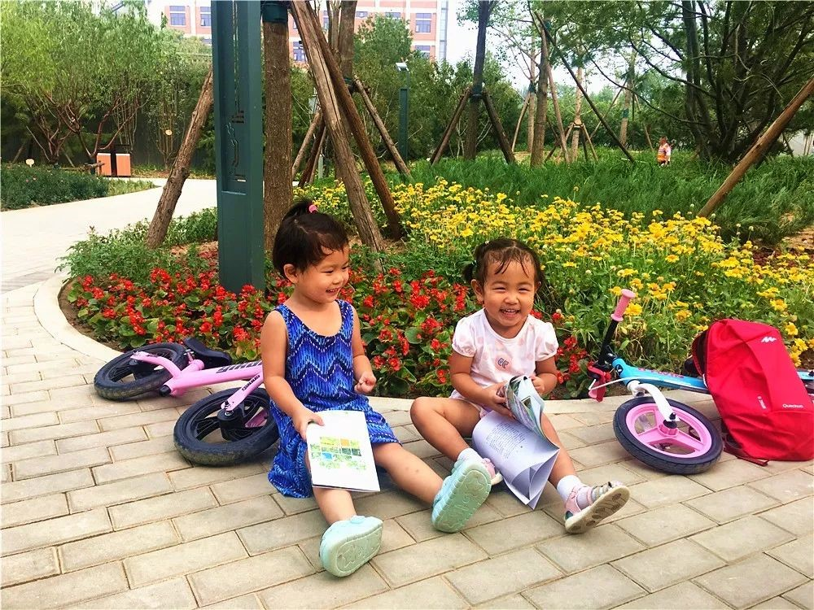家住附近百荣嘉园的居民顾淑明在这里生活了30多年，她高兴地说：“以前我们去陶然亭公园或天坛公园，步行单程就要20多分钟，如今，10分钟左右就能走到这里，风景好，还是拍照的好地方。之前我们只知道这里有个‘燕墩’，今天看了碑文才知道原来它有这么悠久的历史，以后我要常带我的小外孙过来看看。”